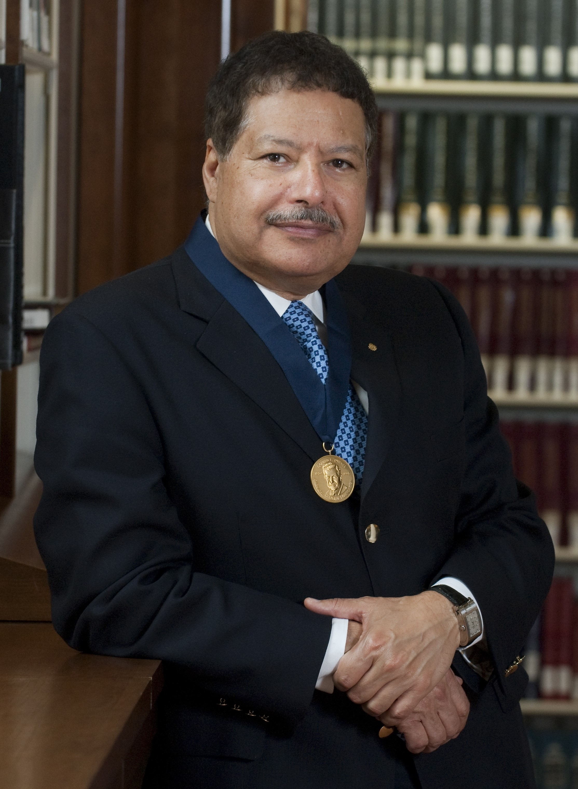

أحمد حسن زويل (26 فبراير 1946 - 2 أغسطس 2016) كان كيميائياً مصرياً أمريكياً، معروفاً بلقب "أب الفيتمتوكيمياء" . حصل على جائزة نوبل في الكيمياء عام 1999 تقديراً لعمله في الفيتمتوكيمياء، وأصبح أول مصري وعربي يحصل على جائزة نوبل في مجال علمي، كما أنه أول أفريقي يحصل على جائزة نوبل في الكيمياء. كان أستاذاً في الكيمياء والفيزياء في معهد كاليفورنيا للتكنولوجيا (كالتيك)، حيث كان أول عضو هيئة تدريس في كالتيك يُعين كرسي لينوس باولنج لفيزياء الكيمياء وشغل أيضاً منصب مدير مركز العلوم البيولوجية الفيزيائية للعلوم والتكنولوجيا فوق السريعة.الحياة المبكرة والتعليمولد أحمد حسن زويل في 26 فبراير 1946 في دمنهور، مصر، ونشأ في دسوق. حصل على درجتي البكاليوس والماجستير في الكيمياء من جامعة الإسكندرية قبل أن ينتقل إلى الولايات المتحدة لإكمال درجة الدكتوراه في جامعة بنسلفانيا.
